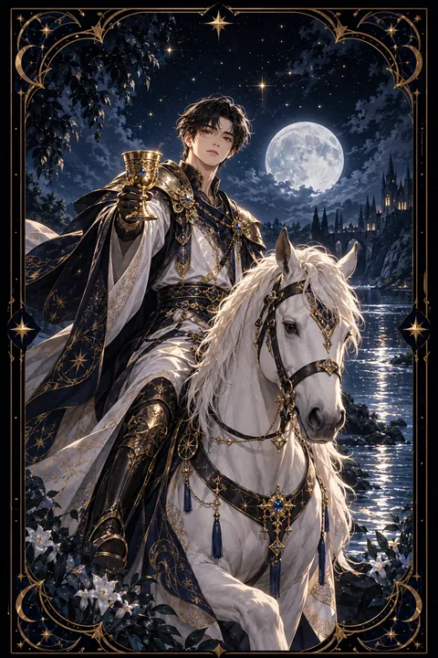

컵 기사 카드 — 마음을 담은 제안과 고백
컵 기사 카드 한눈에 보기
컵 기사 카드 상징 읽기

동네보살의 카드 그림은 전통 라이더–웨이트 덱의 뜻을 새 그림으로 옮긴 것입니다. 아래 상징 설명은 전통 덱의 그림을 기준으로 합니다.
흰 말을 탄 기사가 잔을 두 손으로 받쳐 들고 천천히 앞으로 나아갑니다. 다른 기사 카드들처럼 거칠게 달리지 않는 차분한 걸음은 감정을 부드럽게 전하려는 태도를 보여 줍니다.
기사의 투구와 발뒤꿈치에는 날개가 달려 있습니다. 날개는 상상력과 예술적 감각을 뜻하며 전령의 신 헤르메스를 떠올리게 합니다. 기사가 마음과 소식을 전하는 전령이라는 뜻입니다.
갑옷 위 겉옷에 그려진 물고기 무늬는 감정과 무의식의 세계를, 흰 말은 순수한 의도를 상징합니다. 곁을 흐르는 강물은 막힘없이 흐르는 감정을 보여 주고 멀리 보이는 산은 이상을 향한 여정을 뜻합니다.
기사가 잔을 앞으로 내민 모습은 선물이나 초대, 청혼처럼 누군가에게 마음을 건네는 순간을 그린 것입니다. 기사의 표정이 고요하다는 점도 중요합니다. 들뜬 열정보다 깊은 진심으로 다가오는 사람이라는 뜻입니다.
컵 기사 카드 정방향 뜻
정방향 컵 기사는 마음을 담은 제안과 낭만이 다가오는 카드입니다. 고백, 청혼, 초대처럼 감정이 실린 소식이 찾아오거나 당신이 그 마음을 전하는 사람이 될 수 있습니다. 논리보다 감성이 길을 여는 시기입니다.
이 카드는 마음이 이끄는 방향을 따라가라고 말합니다. 예술적인 감각과 상상력이 풍부해져 창작 활동이나 표현하는 일에서 좋은 성과를 거둘 수 있습니다. 부드러운 말투와 배려심 있는 태도가 사람들의 호감을 얻어 줍니다.
다만 감정을 전할 때는 구체적인 행동을 함께 보여 주는 것이 좋습니다. 기사가 잔을 두 손으로 받쳐 들고 오듯 정성을 다하면 상대도 그 진심을 느낍니다. 오랫동안 마음속에만 담아 둔 말이 있다면 지금 전해 보세요. 낭만은 표현될 때 비로소 현실이 됩니다.
컵 기사 카드 역방향 뜻
역방향 컵 기사는 달콤한 말 뒤에 실속이 없는 상황을 경고합니다. 약속은 화려하지만 지켜지지 않거나 기분에 따라 태도가 바뀌는 사람을 만날 수 있습니다. 반대로 당신이 현실과 동떨어진 꿈에 빠져 해야 할 일을 미루고 있을 수도 있습니다.
감정 기복이 심해지고 질투나 서운함이 커져 관계를 흔들기 쉬운 시기입니다. 지나치게 이상적인 기대를 품고 상대를 바라보면 실망도 그만큼 커집니다.
이 카드는 낭만을 버리라는 뜻이 아니라 현실의 발판을 함께 다지라는 조언입니다. 마음을 끄는 제안이 있다면 조건과 일정을 구체적으로 확인하세요. 스스로 한 약속도 지킬 수 있는 만큼만 하세요. 그래야 사람들이 당신의 말을 믿고 기다려 줍니다. 감정이 흔들릴 때는 큰 결정을 잠시 미루고 마음이 가라앉은 뒤에 판단하는 편이 안전합니다.
연애에서 컵 기사 카드
솔로라면 영화 같은 낭만을 품은 인연을 만날 수 있는 때입니다. 다정하고 감성적인 사람이 먼저 호감을 표현하거나 데이트 신청을 해 올 수 있습니다. 호감 가는 상대가 떠오른다면 분위기 좋은 장소로 초대해 보세요.
사랑하는 사람과 함께라면 관계에 낭만이 더해지는 흐름입니다. 깜짝 이벤트나 진심을 담은 편지가 상대의 마음을 크게 움직입니다. 청혼이나 미래를 약속하는 이야기가 오갈 수 있는 카드이기도 합니다. 다만 분위기에만 기대어 중요한 문제를 덮어 두지는 마세요. 설렘이 오래가려면 일상의 약속을 지키는 꾸준함이 뒷받침되어야 합니다. 상대가 표현하는 말과 실제로 보여 주는 행동이 일치하는지 차분히 살펴보는 것도 관계를 지키는 방법입니다. 기념일이 아니어도 특별한 하루를 만들어 보세요. 진심은 거창한 이벤트보다 꾸준한 관심에서 더 잘 전해집니다.
재회·속마음 질문에서 컵 기사 카드
재회 질문에서 컵 기사가 나오면 상대가 먼저 다가오거나 화해의 손길을 내밀 가능성이 있습니다. 부드러운 연락이나 선물처럼 마음을 담은 신호가 올 수 있습니다. 이때는 지난 일을 따지기보다 상대가 건네는 진심을 차분히 받아 보세요. 기사처럼 천천히 다가오는 흐름이라 조급하게 답을 재촉하면 오히려 멀어질 수 있습니다. 반대로 당신이 먼저 마음을 전하고 싶다면 짧은 편지나 메시지로 진심을 담아 보내는 방식이 잘 어울립니다. 카드가 거꾸로 섰다면 분위기에 휩쓸린 일시적인 연락일 수 있으니 말보다 행동이 이어지는지 시간을 두고 지켜보세요. 화해의 자리에서는 사과와 고마움을 함께 전하면 좋습니다.
일·금전에서 컵 기사 카드
일과 직장에서는 반가운 제안이나 협업 요청이 들어오는 시기입니다. 창의성이 필요한 기획, 디자인, 서비스 분야에서 당신의 감각이 돋보입니다. 협상이나 설득이 필요한 자리에서는 논리보다 공감을 앞세울 때 좋은 결과가 나옵니다.
금전 면에서는 마음이 가는 일에서 수입이 생기는 흐름입니다. 다만 감정에 들떠 충동적으로 계약하거나 큰돈을 쓰기 쉬운 때이니 조건을 문서로 확인한 뒤 결정하세요. 좋은 제안일수록 하루쯤 시간을 두고 검토하는 여유가 필요합니다. 제안서나 발표 자료에 이야기를 담아 감정에 호소하면 설득력이 커집니다. 여러 제안이 한꺼번에 들어온다면 마음이 가장 오래 머무는 쪽을 우선순위에 두세요.
컵 기사 카드는 예일까 아니오일까
마음을 담은 제안이 다가오고 감정이 흐르는 방향을 따르라는 뜻이 담겨 긍정인 예로 봅니다. 거꾸로 나온 기사라면 약속이 말로만 끝날 수 있어 실제 행동을 확인한 뒤 판단해야 하는 조건부가 됩니다.
자주 묻는 질문
컵 기사 카드 역방향은 나쁜 뜻인가요?
역방향 컵 기사는 달콤한 말 뒤에 실속이 없는 상황을 경고합니다. 약속은 화려하지만 지켜지지 않거나 기분에 따라 태도가 바뀌는 사람을 만날 수 있습니다. 반대로 당신이 현실과 동떨어진 꿈에 빠져 해야 할 일을 미루고 있을 수도 있습니다.
컵 기사 카드가 연애 질문에 나오면요?
솔로라면 영화 같은 낭만을 품은 인연을 만날 수 있는 때입니다. 다정하고 감성적인 사람이 먼저 호감을 표현하거나 데이트 신청을 해 올 수 있습니다. 호감 가는 상대가 떠오른다면 분위기 좋은 장소로 초대해 보세요.
타로 카드는 어떻게 뽑나요?
타로 카드 페이지에서 78장을 섞으면 그중 22장이 펼쳐집니다. 마음이 가는 세 장을 고르면 과거·현재·미래 자리에 놓이고, 한 장씩 뒤집어 자리와 방향에 맞는 풀이를 읽습니다. 정방향과 역방향은 섞는 순간 정해집니다.